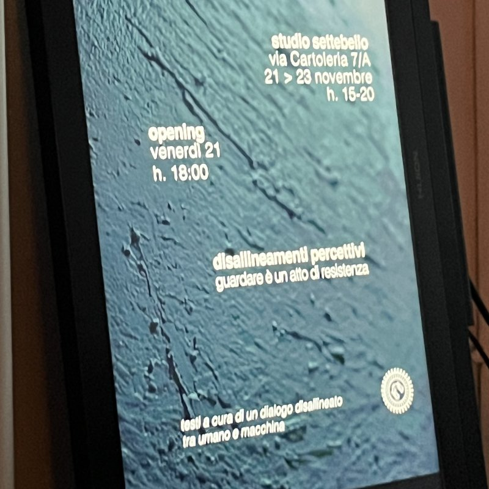
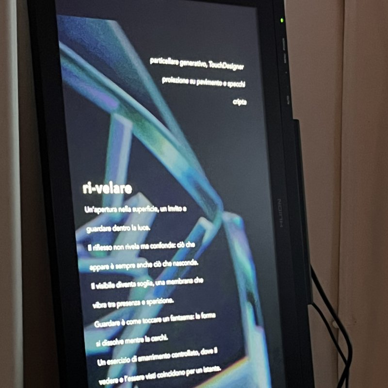
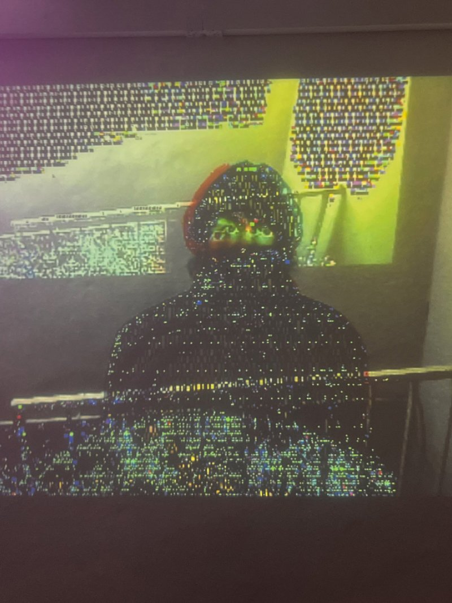
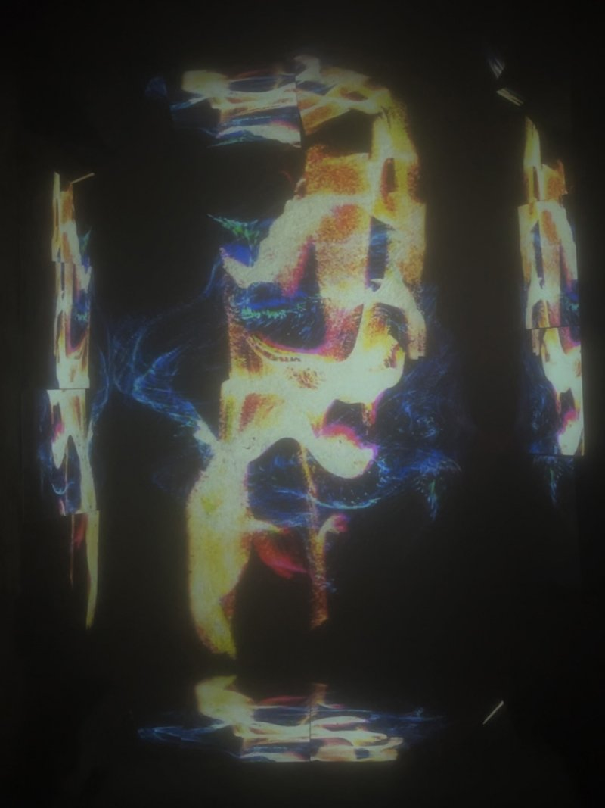

Disallineamenti Percettivi
Installation on the perception of images, space and movement

From seeing to being present.
There is a feeling that keeps returning: that of no longer being able to stay inside one's own time. Images arrive too early or too late, they scroll perfectly, but without leaving anything. They pass through us as if neutral, but carry a noise that can no longer be heard. It is from there that Disallineamenti Percettivi was born: from the attempt to give form to that subtle friction between seeing and being present.
Guy Debord wrote that everything that was lived has moved away into a representation. Today that distance has become our normality: we no longer look from outside, we are inside the image, part of its own mechanism.
"The installations don't try to correct this distortion: they stage it, make it inhabitable. Looking becomes a minimal act of resistance, a way of staying in the crack — and staying alive."
The exhibition works as an open system: no right direction, no suggested reading, only the possibility of crossing through.
Three installations, three deviations of the gaze. Ri-velare, ri-cor-dare, de-siderare — three verbs that don't seek a truth to find, only the possibility of remaining in the gesture.





ri-velare opens a gap in the surface: the reflection doesn't reveal but confuses, what appears is always also what hides.
Looking is like touching a ghost — the form dissolves as you search for it.
ri-cor-dare dilates time, lets the present stumble and go back, like a heartbeat trying to realign with the body. de-siderare interrupts the automatic gesture, opens a void between one image and another — a space of lack where one can breathe. In the gap between one frame and the next, a new desire is born, not of possession but of absence.

